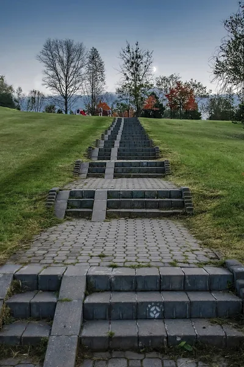
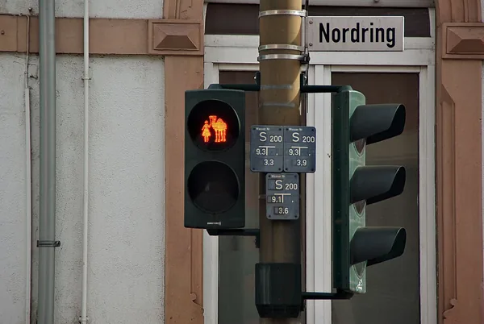
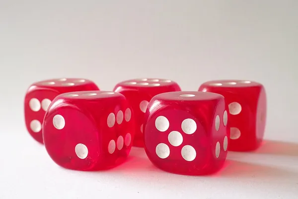

<!doctype html>
<html lang="ro">
<head>
<meta charset="utf-8">
<meta name="viewport" content="width=device-width, initial-scale=1, viewport-fit=cover">
<title>Lecția 23, clasa a VI-a: Comparăm cele trei structuri repetitive. Când o folosesc pe fiecare</title>
<meta name="description" content="Lecția 23, clasa a VI-a (consolidare): cele trei structuri repetitive puse una lângă alta — „pentru”, „cât timp”, „repetă … până când”: unde e testul, de câte ori se execută corpul, dacă știi dinainte numărul de treceri. Aceeași problemă scrisă cu toate trei, cazul în care dau rezultate diferite, regula alegerii pe cinci probleme și, în Scratch, „repetă 5” schimbat în „repetă până când”.">
<link rel="preconnect" href="https://fonts.googleapis.com">
<link rel="preconnect" href="https://fonts.gstatic.com" crossorigin>
<link rel="stylesheet" href="https://fonts.googleapis.com/css2?family=Baloo+2:wght@600;800&family=Nunito+Sans:ital,wght@0,400;0,600;0,700;1,400&family=Fira+Code:wght@500;600&display=swap&subset=latin-ext">
<link rel="stylesheet" href="../../../jocuri/_motor/motor.css">
<style>
:root{
  --desk:#EEF5F8; --paper:#FFFFFF; --paper2:#F1F7FA; --line:#CFE0E8;
  --ink:#16303B; --ink2:#4E6B78; --accent:#1F7A9E; --accentInk:#FFFFFF; --sel:#DCEFF6;
  --mark:#FFE07A; --markInk:#16303B; --ok:#1E7A46; --okbg:#E0F2E6; --bad:#B8362E; --badbg:#FAE4E2;
  --fd:"Baloo 2","Segoe UI",system-ui,sans-serif; --fb:"Nunito Sans","Segoe UI",system-ui,sans-serif; --fm:"Fira Code",Consolas,monospace;
}
@media (prefers-color-scheme:dark){:root:not([data-theme="light"]){
  --desk:#0F1D23; --paper:#16262E; --paper2:#1D313A; --line:#2F4A56;
  --ink:#E4F0F5; --ink2:#A6C1CC; --accent:#7CC6E4; --accentInk:#0F1D23; --sel:#24414D;
  --mark:#EBC95C; --markInk:#16303B; --ok:#6CCB8F; --okbg:#18301F; --bad:#FF877B; --badbg:#3A1E1B;
}}
:root[data-theme="dark"]{
  --desk:#0F1D23; --paper:#16262E; --paper2:#1D313A; --line:#2F4A56;
  --ink:#E4F0F5; --ink2:#A6C1CC; --accent:#7CC6E4; --accentInk:#0F1D23; --sel:#24414D;
  --mark:#EBC95C; --markInk:#16303B; --ok:#6CCB8F; --okbg:#18301F; --bad:#FF877B; --badbg:#3A1E1B;
}
/* tema: cele două blocuri de repetiție din Scratch, unul lângă altul */
.banda{display:flex;align-items:center;gap:4px;padding:7px 12px;white-space:nowrap;overflow:hidden;background:var(--paper2);border-bottom:2px solid var(--accent);font-family:"Helvetica Neue","Segoe UI",Arial,sans-serif;font-size:.72rem;font-weight:700;color:#fff}
.banda .bk{flex:none;display:inline-block;padding:4px 10px;border-radius:5px;border:1px solid rgba(0,0,0,.18)}
.banda .ev{background:#FFBF00;color:#3A2A00;border-radius:14px 14px 5px 5px}
.banda .ct{background:#FFAB19;color:#3A2A00}
.banda .op{background:#59C059;clip-path:polygon(10px 0,calc(100% - 10px) 0,100% 50%,calc(100% - 10px) 100%,10px 100%,0 50%);padding:4px 14px}
.banda .mv{background:#4C97FF}
.banda .sep{flex:none;color:var(--ink2);padding:0 4px}
/* r1 (sonnet M-4, 02.11): pe telefon banda trece pe rânduri noi, nu taie condiția */
@media (max-width:560px){.banda{flex-wrap:wrap;white-space:normal;row-gap:4px}}
h1,h2{font-weight:800;letter-spacing:0}
h1 .acc{color:var(--accent)}
code{font-family:var(--fm);font-size:.9em}
/* „Acum în Scratch” (regula 10): gesturi mici, reale, imediat după pas */
.acum{border:2px dashed var(--accent);border-radius:10px;background:var(--paper2);padding:8px 12px;margin:12px 0 4px}
.acum .lbl{font-family:var(--fd);font-weight:800;color:var(--accent);margin-bottom:2px}
.acum ol{margin:.2em 0 .2em 1.2em;padding:0}
.acum li{margin:.15em 0}
/* trei coloane: cele trei structuri una lângă alta (pe telefon, una sub alta) */
.trei{display:grid;grid-template-columns:repeat(auto-fit,minmax(280px,1fr));gap:10px;align-items:start}
.trei > div{min-width:0}
.trei .et{font-size:.85rem;color:var(--ink2);margin:0 0 2px;font-weight:700}
.doua{display:grid;grid-template-columns:1fr 1fr;gap:10px;align-items:start}
.doua > div{min-width:0}
.doua .et{font-size:.85rem;color:var(--ink2);margin:0 0 2px}
@media (max-width:700px){.trei{grid-template-columns:minmax(0,1fr)}}
@media (max-width:560px){.doua{grid-template-columns:1fr}}
/* P0: trei fotografii mici, una lângă alta */
.trio{display:grid;grid-template-columns:repeat(3,minmax(0,1fr));gap:8px;align-items:start}
.trio figure{margin:0}
.trio img{width:100%;height:150px;object-fit:cover;border-radius:8px}
@media (max-width:560px){.trio img{height:110px}}
/* regula 20: legăturile surselor fotografiilor ≥ 32 px */
.sursa-foto a{display:inline-block;padding:8px 0}
.captura>a{min-height:32px}
</style>
</head>
<body>
<script src="../../../jocuri/_motor/motor.js"></script>
<script src="../../_sim/scratch.js"></script>
<script src="../../_sim/scratch-control.js"></script>
<script src="../../_sim/scratch-conditie.js"></script>
<script src="../../_sim/urmarire-algoritm.js"></script>
<script src="../../_sim/urmarire-algoritm-repetitie.js"></script>
<script src="../../_sim/urmarire-algoritm-cattimp.js"></script>
<script src="../../_sim/urmarire-algoritm-pana-cand.js"></script>
<script src="../../_sim/compara-repetitii.js"></script>
<script>
/* Lecția 23, clasa a VI-a (M4, consolidare): „Comparăm cele trei structuri repetitive. Când o folosesc pe fiecare”.
   Legea: _campaign\revizuire_completa_2026_09\00_GHID_LECTII.md. Sursele și probele: surse.md, _proba\.
   Activitatea profesorului (activitati_lectii_V_VI.json, lecția 23): „Tabel comparativ completat de elevi în echipe și
   confruntat la tablă. Apoi, pentru cinci probleme date, fiecare echipă alege structura potrivită și argumentează.”
   La ora simultană (fără profesor, fără echipe): tabelul îl completează elevul în pagină (pasul 2), „confruntarea” =
   aceeași problemă scrisă cu cele trei structuri și urmărită cu componentele publicate (pașii 3-4), cele cinci probleme
   (din jocul algoritmi-vi, nivelul 6) cu structura și motivul ales dintre variante-soră (pasul 5).
   Aplicația = Scratch 3, editorul online scratch.mit.edu, în română, FĂRĂ cont (decizia dirijorului, 23.10.2026).
   Faptele despre Scratch: probate în editorul viu (_proba\live_compara.py → live_compara.json) + lecțiile 20-22.
   Simulatoarele, doar FOLOSITE: scratch.js (VI/18), scratch-control.js (VI/20), scratch-conditie.js (VI/21),
   urmarire-algoritm.js (VI/17), -repetitie.js (VI/20), -cattimp.js (VI/21), -pana-cand.js (VI/22) · NOU, al lecției:
   lectii/_sim/compara-repetitii.js (tabelul comparativ, „treiori”, „alegestructura”).
   Valorile din tabele și din exemple sunt CALCULATE de interpretoarele publicate, nu scrise de mână.
   Granița: NU schema logică / blocurile grafice (24), NU sume, numărări, cifre (25), NU evaluarea (26), NU variabilele
   Scratch, NU „dacă” în Scratch. */
SimScratch.stil();
const fig = (f, w, h, alt, cap) => `<figure class="captura"><a href="img/${f}" target="_blank"></a><figcaption>${cap}</figcaption></figure>`;
const ACUM = (...p) => `<div class="acum" role="note"><div class="lbl">Acum în Scratch, la calculator</div><ol>${p.map(x => `<li>${x}</li>`).join('')}</ol></div>`;
const L = p => UrmarireAlgoritm.listare(p);
const CR = ComparaRepetitii;
const afis = (p, d) => CR.afisari(p, d || {});
const tr = (p, d) => CR.treceri(p, d || {});

/* ---- ajutoare pentru testele simulatorului (pe COMPORTAMENT: programul elevului e rulat de la steag) — copiate din VI/22 ---- */
const SC = SimScratchConditie;
const norm = s => String(s == null ? '' : s).normalize('NFD').replace(/[̀-ͯ]/g, '').toLowerCase().replace(/[\s.!?…]+$/, '').trim();
const eq = (a, b) => JSON.stringify(a) === JSON.stringify(b);
const spusLa = (U, text, o) => { let p = [o.x, o.y]; const r = []; for (const e of U.evenimente) { if (e.tip === 'poz') p = e.valoare; if (e.tip === 'spune' && norm(e.valoare) === norm(text)) r.push(p); } return r; };
const STRAMB = {x: -120, y: 80, directie: 0};
const PAL = ['steag', 'mergi', 'mergi_la_xy', 'orienteaza', 'pozitia_x', 'spune_sec', 'repeta', 'repeta_pana', 'mai_mare', 'mai_mic'];
const NOTA_SIM = 'În pagină sunt doar blocurile de azi (Scratch are mult mai multe), iar pisica e desenată mai simplu decât în Scratch.';
const POZ = (op, n) => [op, '', n, {s: {0: ['pozitia_x']}}];
const dinX = (P, x) => { const Q = JSON.parse(JSON.stringify(P)); Q.forEach(sc => sc.b.forEach(b => { if (b[0] === 'mergi_la_xy') { b[1] = x; b[2] = 0; } })); return Q; };
const ruleaza = (P, cadre) => SimScratch.urma(P, {x: 0, y: 0, directie: 90, cadre: cadre || 900});
const condLa = (P, x) => { const c = SC.conditia(P); if (!c) return false; return SimScratch.urma([{x: 0, y: 0, b: [['steag'], ['mergi_la_xy', x, 0], ['orienteaza', 90], ['repeta_pana', {s: {0: c}, guri: [[]]}]]}], {x: 0, y: 0, directie: 90, cadre: 20}).terminat; };
const condCaInCaiet = (P, prag) => [prag - 60, prag - 1, prag, prag + 1, prag + 60].every(x => condLa(P, x) === (x > prag));
/* „cât timp x ≤ prag execută x ← x + pas” din caiet: unde se oprește și unde e pisica după fiecare trecere */
const catTimp = (x, prag, pas) => { let k = 0; while (x <= prag && k < 1000) { x += pas; k++; } return x; };
const treceriCT = (x, prag, pas) => { const r = []; while (x <= prag && r.length < 1000) { x += pas; r.push(x); } return r; };
const caCaietul = (P, prag, pas, starturi, cuHop) => starturi.every(s => { const U = ruleaza(dinX(P, s));
  return U.terminat && U.x === catTimp(s, prag, pas) && (!cuHop || eq(spusLa(U, 'Hop!', {x: 0, y: 0}), treceriCT(s, prag, pas).map(x => [x, 0]))); });
const nx = x => (x < 0 ? `−${-x}` : `${x}`);

/* ---- mesajele testelor Scratch spun STAREA programului de acum (regula 28; modelul VI/22: testCuMesaj) ---- */
const ob = b => b.find(x => x && typeof x === 'object' && !Array.isArray(x)) || {};
const eCorp = b => b[0] === 'mergi' || b[0] === 'spune_sec';
const numeBloc = b => b[0] === 'mergi' ? `„mergi ${b[1]} pași”` : b[0] === 'spune_sec' ? `„spune ${b[1]} pentru ${b[2]} secunde”` : b[0] === 'steag' ? '„când se dă click pe ⚑”' : 'un bloc';
const stareT = (P) => {
  const cuSteag = P.filter(s => s.b.length && s.b[0][0] === 'steag');
  const main = cuSteag.find(s => s.b.some(b => b[0] === 'repeta_pana' || b[0] === 'repeta')) || cuSteag[0] || {b: []};
  const iR = main.b.findIndex(b => b[0] === 'repeta_pana'), iC = main.b.findIndex(b => b[0] === 'repeta');
  const iO = main.b.findIndex(b => b[0] === 'orienteaza');
  const guraR = iR >= 0 ? ((ob(main.b[iR]).guri || [[]])[0] || []) : [];
  /* r1 (G1, 02.11): corpul pus între „orientează-te” și „repetă până când” (obiceiul lecției 22) și „repetă până când” lăsat liber */
  const rpLiber = P.find(s => s !== main && s.b.length && s.b[0][0] === 'repeta_pana');
  /* t2 (Q, 02.11): corpul pus mai sus, deasupra lui „orientează-te” (sub pălărie sau sub „mergi la x”) */
  const iSus = iO > 0 && iO < iR ? main.b.findIndex((b, i) => i > 0 && i < iO && eCorp(b)) : -1;
  return {main, iR, iC, iO, iSus, guraR, imbricat: guraR.some(b => b[0] === 'repeta'), sub: iR >= 0 ? main.b.slice(iR + 1) : [],
    deasupra: iR >= 0 ? main.b.slice(iO + 1, iR).filter(eCorp) : [], rest: main.b.slice(iO + 1).filter(eCorp),
    rpLiber, guraLiber: rpLiber ? ((ob(rpLiber.b[0]).guri || [[]])[0] || []) : [],
    libere: P.filter(s => s !== main && s.b.length && s.b[0][0] !== 'steag' && s.b.some(eCorp))};
};
/* o = {corp:[blocuri], nume:'„mergi 50 pași”', n: 5, prag: 60}; întoarce mesajul stării sau null */
const mesajT = (P, o) => {
  const S = stareT(P), N = `„repetă ${o.n}”`;
  if (S.imbricat) return `În gura lui „repetă până când” e încă ${N}. Trage-l afară, pe un loc gol (vine cu corpul din gura lui); mută corpul în gura lui „repetă până când”, chiar sub rândul de sus; apoi ${N}, gol, în paletă.`;
  if (S.iR < 0 && S.iC >= 0) return `Programul are încă ${N}: el face mereu ${o.n} treceri, de oriunde pornește pisica. Trage ${o.nume} din gura lui pe un loc gol; trage ${N}, rămas gol, în paletă; din Control, „repetă până când” chiar sub „orientează-te în direcția 90”; apoi ${o.nume} în gura lui, chiar sub rândul de sus.`;
  if (S.iR < 0 && S.rpLiber) {
    const plin = S.guraLiber.some(eCorp);
    if (plin && S.rest.length) return `„repetă până când” stă pe un loc gol, nelipit de program. Trage ${numeBloc(S.rest[0])} de sub „orientează-te” în paletă (vin și blocurile de sub el); apoi lasă „repetă până când” (vine cu ce are în gură) chiar sub „orientează-te în direcția 90”.`;
    if (S.rest.length) return `„repetă până când” stă pe un loc gol, nelipit de program, iar corpul e sub „orientează-te”. Trage ${numeBloc(S.rest[0])} (vin și blocurile de sub el) în gura lui „repetă până când”, chiar sub rândul de sus; apoi lasă „repetă până când” chiar sub „orientează-te în direcția 90”.`;
    return `„repetă până când” stă pe un loc gol, nelipit de program, deci nu pornește la steag. Trage-l (vine cu ce are în gură) chiar sub „orientează-te în direcția 90”.`;
  }
  if (S.iR < 0) return `În program nu e niciun „repetă până când”: din Control, lasă-l chiar sub „orientează-te în direcția 90”, apoi pune ${o.nume} în gura lui, chiar sub rândul de sus.`;
  if (S.iC > S.iR) return `${N} e sub brațul de jos al lui „repetă până când”: se execută după repetiție. Dacă are ceva în gură, trage de acolo ${o.nume} în gura lui „repetă până când”, chiar sub rândul de sus; apoi trage ${N} în paletă (vin și blocurile de sub el).`;
  if (S.iC >= 0) return `${N} e încă în program, deasupra lui „repetă până când”. Trage „repetă până când” pe un loc gol (vine cu tot ce are în gură și sub el); scoate ${o.nume} din gura lui ${N} și pune-l în gura lui „repetă până când”; trage ${N} în paletă; apoi lasă „repetă până când” chiar sub „orientează-te în direcția 90”.`;
  /* t2 (P, Q, 02.11): gura PLINĂ = are tot corpul; atunci copia de afară se șterge, nu se mai pune în gură */
  const plina = o.corp.every(c => S.guraR.some(b => b[0] === c[0])), goala = !S.guraR.some(eCorp);
  if (S.iSus > 0 && (plina || goala)) {
    const scurt = b => b[0] === 'orienteaza' ? '„orientează-te”' : b[0] === 'mergi_la_xy' ? '„mergi la x”' : numeBloc(b);
    const B = S.main.b, x = numeBloc(B[S.iSus]), y = scurt(B.slice(S.iSus).find(b => !eCorp(b))), z = scurt(B[S.iSus - 1]);
    return (plina ? `Între ${z} și ${y} e încă ${x}, deși corpul e deja în gura lui „repetă până când”. `
      : `Între ${z} și ${y} e ${x}, iar gura lui „repetă până când” e goală. `) +
      `Trage ${y} pe un loc gol (vin și blocurile de sub el); ` +
      (plina ? `trage ${x} în paletă (vin și blocurile de sub el)` : `trage ${x} (vin și blocurile de sub el) în gura lui „repetă până când”, chiar sub rândul de sus`) +
      `; lasă ${y} înapoi chiar sub ${z}.`;
  }
  /* r1 (G1): corpul o dată deasupra (obiceiul lecției 22) — aici caietul are „cât timp”, deci nimic deasupra.
     t2 (R): ce face pisica din cauza lui, după blocurile care chiar sunt acolo */
  const nM = S.deasupra.filter(b => b[0] === 'mergi').length, sp = S.deasupra.filter(b => b[0] === 'spune_sec');
  /* j3 (T, 02.11, dirijor): „face o trecere” doar când deasupra e corpul ÎNTREG; un „mergi” singur doar mută pisica */
  const intreg = o.corp.every(c => S.deasupra.some(b => b[0] === c[0]));
  const efect = nM === 1 && intreg ? `așa pisica face o trecere și când pornește de dincolo de ${o.prag}` : nM ? `așa pisica merge ${nM === 1 ? 'o dată' : `de ${nM} ori`} înainte de repetiție, de oriunde pornește`
    : sp.length ? `așa pisica spune „${sp[0][1]}” ${sp.length === 1 ? 'o dată' : `de ${sp.length} ori`} înainte de repetiție, de oriunde pornește` : '';
  if (S.deasupra.length && S.guraR.some(eCorp)) return `Între „orientează-te în direcția 90” și „repetă până când” e încă ${numeBloc(S.deasupra[0])}: ${efect}. Corpul o dată deasupra e pentru „repetă … până când” din caiet (lecția 22); aici caietul are „cât timp”. Trage „repetă până când” pe un loc gol (vine cu ce are în gură); trage ${numeBloc(S.deasupra[0])} rămas sub „orientează-te” în paletă (vin și blocurile de sub el); lasă „repetă până când” chiar sub „orientează-te în direcția 90”.`;
  if (S.deasupra.length) return `${numeBloc(S.deasupra[0])} e deasupra lui „repetă până când”, iar gura lui e goală: așa corpul se execută o singură dată, înainte de repetiție. Trage „repetă până când” pe un loc gol; trage ${numeBloc(S.deasupra[0])} (vin și blocurile de sub el) în gura lui, chiar sub rândul de sus; lasă „repetă până când” chiar sub „orientează-te în direcția 90”.`;
  if (S.sub.some(eCorp) && plina) return `Sub brațul de jos al lui „repetă până când” e încă ${numeBloc(S.sub.find(eCorp))}, deși corpul e deja în gura lui: așa se mai execută o dată, după repetiție. Trage-l în paletă (vin și blocurile de sub el).`;
  if (S.sub.some(eCorp)) return `Sub brațul de jos al lui „repetă până când” e ${numeBloc(S.sub.find(eCorp))}: acolo se execută o dată, după repetiție. Trage-l (vin și blocurile de sub el) în gura lui, chiar sub rândul de sus.`;
  if (!S.guraR.some(eCorp) && S.libere.length) return `${numeBloc(S.libere[0].b.find(eCorp))} de lângă program nu e lipit de el, deci nu pornește la steag. Trage-l (vin și blocurile de sub el) în gura lui „repetă până când”, chiar sub rândul de sus.`;
  return null;
};
/* testul condiției: mesajul spune ce e acum în locul în șase colțuri */
const mesajCond = (P, prag, o) => {
  const S = stareT(P);
  if (S.iR < 0) return mesajT(P, o);
  if (!SC.conditia(P)) return `Locul în șase colțuri al lui „repetă până când” e gol: din Operatori, „( ) > (50)”; în prima lui căsuță „poziția x” din Mișcare, în a doua ${prag}.`;
  if (condLa(P, prag - 60) && !condLa(P, prag + 60)) return `Condiția e pe dos: pisica s-ar opri înainte de ${prag}, nu după ce trece de el. În Scratch scrii când te OPREȘTI, adică opusul lui „x ≤ ${prag}”: „(poziția x) > ${prag}” — „poziția x” în PRIMA căsuță a lui „( ) > (50)”, ${prag} în a doua.`;
  return null;
};
/* r1 (G1, 02.11): unde ajunge pisica față de caiet, la PRIMUL loc de pornire care pică (nu la unul fix) */
const undeLa = (P, prag, pas, starturi, cuHop) => {
  const s = starturi.find(x => !caCaietul(P, prag, pas, [x], cuHop));
  if (s === undefined) return '';
  const U = ruleaza(dinX(P, s)), xc = catTimp(s, prag, pas);
  if (!U.terminat) return `Pornită din x ${nx(s)}, pisica nu se mai oprește; în caiet, la x ${nx(xc)}. `;
  if (U.x !== xc) return `Pornită din x ${nx(s)}, pisica ajunge la x ${nx(U.x)}; în caiet, la x ${nx(xc)}. `;
  return `Pornită din x ${nx(s)}, pisica spune „Hop!” în alte locuri decât în caiet. `;
};
/* parcurgerea 02.11: orice schimbare a programului stinge „Ai apăsat steagul”, deci mesajul de stare se termină cu steagul */
const testCuMesaj = (t, mesaj) => { const ok0 = t.ok, msg0 = t.msg; t.ok = (U, P, S) => { const r = ok0(U, P, S); if (!r) { try { const m = mesaj(P); t.msg = m ? `${m} Apoi apasă steagul verde.` : msg0; } catch (e) { t.msg = msg0; } } return r; }; return t; };

/* ---- pseudocodul (valorile din exemple le calculează interpretoarele publicate) ---- */
const F_PENTRU = ['pentru i ← 1, n execută', '   rândurile care se repetă', 'sfârșit pentru'];
const F_CATTIMP = ['cât timp condiție execută', '   rândurile care se repetă', 'sfârșit cât timp'];
const F_REPETA = ['repetă', '   rândurile care se repetă', 'până când condiție'];
const PIS_P = ['x ← -150', 'pentru i ← 1, 5 execută', '   x ← x + 50', 'sfârșit pentru', 'Afișează x'];
const PIS_C = ['x ← -150', 'cât timp x ≤ 90 execută', '   x ← x + 50', 'sfârșit cât timp', 'Afișează x'];
const PIS_R = ['x ← -150', 'repetă', '   x ← x + 50', 'până când x > 90', 'Afișează x'];
const din100 = p => ['x ← 100'].concat(p.slice(1));
const K_P = ['k ← 2', 'pentru i ← 1, 4 execută', '   k ← k + 3', 'sfârșit pentru', 'Afișează k'];
const K_C = ['k ← 2', 'cât timp k ≤ 12 execută', '   k ← k + 3', 'sfârșit cât timp', 'Afișează k'];
const K_R = ['k ← 2', 'repetă', '   k ← k + 3', 'până când k > 12', 'Afișează k'];
const din20 = p => ['k ← 20'].concat(p.slice(1));
const PIS_CIT = ['Citește x', 'cât timp x ≤ 90 execută', '   x ← x + 50', 'sfârșit cât timp', 'Afișează x'];
const AT_CIT = ['Citește x', 'cât timp x ≤ 60 execută', '   x ← x + 50', 'sfârșit cât timp', 'Afișează x'];
const N_P = ['n ← 30', 'pentru i ← 1, 3 execută', '   n ← n + 4', 'sfârșit pentru', 'Afișează n'];
const N_C = ['n ← 30', 'cât timp n < 20 execută', '   n ← n + 4', 'sfârșit cât timp', 'Afișează n'];
const N_R = ['n ← 30', 'repetă', '   n ← n + 4', 'până când n ≥ 20', 'Afișează n'];
/* Î4 (r1): pornit de dincolo de prag — „cât timp” 0 treceri, „repetă” o trecere (valorile le calculează interpretorul) */
const Q4_C = ['x ← 70', 'cât timp x ≤ 50 execută', '   x ← x + 20', 'sfârșit cât timp', 'Afișează x'];
const Q4_R = ['x ← 70', 'repetă', '   x ← x + 20', 'până când x > 50', 'Afișează x'];
const MOT = ['Prima trecere se face sigur.', 'Cerința spune de câte ori.', 'Se poate fără nicio trecere.'];
const TRP = p => `<div class="trei">${p.map(([et, prog, tab]) => `<div><p class="et">${et}</p>${L(prog)}${tab || ''}</div>`).join('')}</div>`;

/* ---- tabelul comparativ (pasul 2): primul rând e „Uite cum”, celelalte trei le completează elevul ---- */
const COLOANE = ['„pentru”', '„cât timp”', '„repetă … până când”'];
const TABEL = [
  /* r1 (M2, 02.11): „cel puțin o dată” singur era ADEVĂRAT și la „pentru i ← 1, 5” (lecția 20) → varianta spune și cât merge */
  {ce: 'De câte ori se execută corpul?', optiuni: ['cel puțin o dată, apoi cât spune condiția', 'o dată pe valoare a contorului', 'poate de 0 ori'], ok: [1, 2, 0],
   motive: ['la „pentru” nu scrii nicio condiție: contorul ia pe rând valorile de la cea inițială la cea finală (lecția 20). Ce face corpul la fiecare?',
     'testul vine înainte de corp (lecția 21). Fals de la început: se mai execută corpul?',
     'corpul vine înaintea testului (lecția 22). Poate să nu se execute deloc?']},
  {ce: 'Știi dinainte de câte ori se repetă?', optiuni: ['nu: depinde de condiție', 'da: din valorile contorului'], ok: [1, 0, 0],
   motive: ['în „pentru i ← 1, 5 execută” stau valoarea inițială și cea finală. Poți socoti trecerile dinainte?',
     'la „cât timp” nu scrii niciun număr de treceri: merge cât timp condiția e adevărată.',
     'la „repetă … până când” nu scrii niciun număr de treceri: merge până când condiția devine adevărată.']}
];
const RAND_EXEMPLU = `<table class="ua-t"><thead><tr><th>Unde e testul?</th>${COLOANE.map(c => `<th>${c}</th>`).join('')}</tr></thead>
<tbody><tr><td>răspunsul</td><td>niciun test scris: contorul merge singur până la valoarea finală</td><td>înainte de corp, după „cât timp”</td><td>după corp, la „până când”</td></tr></tbody></table>`;

/* ---- „Acum în Scratch, la calculator” (laboratorul, după atelier): FĂRĂ profesor, pe calculatorul comun ---- */
const LAB = [
  'Programul casetelor („repetă 5”, din x -200) e în fila Scratch? Treci la punctul 2. Nu e? Fă-l ca la caseta pasului „Aceeași problemă, cu toate trei” (pasul 3 din 6), cu <code>-200</code> în loc de -150.',
  'Trage „mergi 50 pași” din gura lui „repetă 5” pe un loc gol. Trage „repetă 5”, rămas gol, în paletă (așa se șterge).',
  'Din <b>Control</b>, „repetă până când” chiar sub „orientează-te în direcția 90”; „mergi 50 pași” în gura lui, chiar sub rândul de sus.',
  'În locul în șase colțuri: „( ) &gt; (50)” din <b>Operatori</b>, „poziția x” din <b>Mișcare</b> în prima căsuță, <code>90</code> în a doua (clic, scrii, <kbd>Enter</kbd>). Steagul: x 100 (cu „repetă 5”, x 50).',
  '<b>Fișier</b> › <b>Salvează pe calculatorul tău</b>. Browserul întreabă unde? Folderul tău, numele <code>Compar_</code>, clasa și numele tău (de exemplu <code>Compar_6A_Popescu</code>), <b>Salvare</b>. Numele există deja? <b>Nu</b> (sau <b>Anulare</b>), adaugă prenumele, <b>Salvare</b>. Sari la punctul 7.',
  'Nu te-a întrebat? Explorer › <b>Descărcări</b>: fișierul <b>Proiect Scratch</b> (poate cu (1)). <kbd>F2</kbd>, <code>Compar_</code>, clasa și numele tău, <kbd>Enter</kbd>; <b>Decupare</b>, folderul tău, <b>Lipire</b>. Există deja? <b>Se omite acest fișier</b>, adaugă prenumele, mută-l din nou.',
  '<b>Dacă mai ai timp:</b> în „mergi la x -200 y: 0”, clic pe -200, scrie <code>120</code>, <kbd>Enter</kbd>. Steagul: pisica rămâne la x 120, fără nicio trecere: „repetă până când” testează înainte, ca „cât timp”. Nu mai salva.',
  'Închide fila Scratch (te întreabă dacă pleci? Pleci: ai salvat).'
];

/* ---- Scratch: programele exercițiilor (atelierul: 5 treceri din −170; „Încă un exercițiu” al pasului 6: 3 treceri din −60) ---- */
const CORPA = {corp: [['mergi', 50], ['spune_sec', 'Hop!', 1]], nume: '„mergi 50 pași” (cu „spune Hop! pentru 1 secunde” sub el)', n: 5, prag: 60};
const CORPI = {corp: [['mergi', 40]], nume: '„mergi 40 pași”', n: 3, prag: 50};
/* r1 (G1): mesajul testului „pornită din alt loc” = MEREU unde ajunge pisica față de caiet + starea (sau cerința testului) */
const cuUnde = (prag, pas, starturi, cuHop, o, msg) => P => undeLa(P, prag, pas, starturi, cuHop) + (mesajT(P, o) || msg);
const AT_START = [{x: 14, y: 14, b: [['steag'], ['mergi_la_xy', -170, 0], ['orienteaza', 90], ['repeta', 5, {guri: [[['mergi', 50], ['spune_sec', 'Hop!', 1]]]}]]}];
const AT_SOL = [{x: 14, y: 14, b: [['steag'], ['mergi_la_xy', -170, 0], ['orienteaza', 90], ['repeta_pana', {s: {0: POZ('mai_mare', 60)}, guri: [[['mergi', 50], ['spune_sec', 'Hop!', 1]]]}]]}];
const AT_IMBRICAT = [{x: 14, y: 14, b: [['steag'], ['mergi_la_xy', -170, 0], ['orienteaza', 90], ['repeta_pana', {s: {0: POZ('mai_mare', 60)}, guri: [[['repeta', 5, {guri: [[['mergi', 50], ['spune_sec', 'Hop!', 1]]]}]]]}]]}];
const MINI_START = [{x: 14, y: 14, b: [['steag'], ['mergi_la_xy', -60, 0], ['orienteaza', 90], ['repeta', 3, {guri: [[['mergi', 40]]]}]]}];
const MINI_SOL = [{x: 14, y: 14, b: [['steag'], ['mergi_la_xy', -60, 0], ['orienteaza', 90], ['repeta_pana', {s: {0: POZ('mai_mare', 50)}, guri: [[['mergi', 40]]]}]]}];
const MINI_GRESIT = [{x: 14, y: 14, b: [['steag'], ['mergi_la_xy', -60, 0], ['orienteaza', 90], ['repeta_pana', {s: {0: POZ('mai_mic', 50)}, guri: [[['mergi', 40]]]}]]}];
const AT_CAIET = ['x ← -170', 'cât timp x ≤ 60 execută', '   x ← x + 50', '   Afișează „Hop!”', 'sfârșit cât timp'];
const MINI_CAIET = ['x ← -60', 'cât timp x ≤ 50 execută', '   x ← x + 40', 'sfârșit cât timp'];
const TA = treceriCT(-170, 60, 50);

JocMotor.porneste({
  cheie: 'lectie_vi_m4_l23',
  mod: 'lectie',
  titlu: 'Comparăm cele trei structuri repetitive. Când o folosesc pe fiecare',
  marca: 'Lecția <b>23</b> · clasa a VI-a',
  h1: 'Comparăm cele trei <span class="acc">structuri repetitive</span>. Când o folosesc pe fiecare',
  eticheta: 'Lecții TIC',
  acasa: {href: '../../../hub/index.html', text: 'LearningHub'},
  clasa: 'a VI-a',
  unitate: 'VI-U3',
  unitateTitlu: 'Algoritmi: structuri repetitive',
  competente: ['CS.2.1', 'CS.2.2', 'CS.2.3'],
  lectii: '23',
  ancoraText: 'Programa (OMEN 3393/2017), clasa a VI-a, CS.2.1 „Utilizarea unui mediu grafic-interactiv pentru exersarea algoritmilor”, CS.2.2 „Aplicarea etapelor de rezolvare…, urmărind pas cu pas”, CS.2.3 „Reprezentarea algoritmilor…” · unitatea VI-U3 „Algoritmi: structuri repetitive” · lecția 23, consolidare · conținuturile „Structura repetitivă cu contor”, „Structura repetitivă condiționată anterior”, „Structura repetitivă condiționată posterior”. Aplicația: Scratch 3, editorul online scratch.mit.edu; pseudocodul în notația lecțiilor 20, 21 și 22.',
  intro: '<p><b>Ai nevoie de:</b> lecțiile 20, 21 și 22 (în Scratch: „repetă”, „repetă până când”, „poziția x”, „( ) &gt; (50)”, salvarea).</p>',
  cum: '<b>Cum lucrezi:</b> recapitulare. Casetele „Acum în Scratch” le faci în fila Scratch, lângă pagină (pe telefon le sari). „Încă un exercițiu” și „Dacă mai ai timp”: doar dacă termini repede. Când mai sunt 10 minute din oră, treci la întrebări.',
  banda: '<span class="bk ev">când se dă click pe ⚑</span><span class="bk ct">repetă 5</span><span class="sep">sau</span><span class="bk ct">repetă până când</span><span class="bk op">(poziția x) &gt; (90)</span><span class="bk mv">mergi 50 pași</span>',
  nivele: [
{t: 'Comparăm cele trei structuri repetitive. Când o folosesc pe fiecare', final: true, lectii: [23],
 continuturi: ['Structura repetitivă cu contor', 'Structura repetitivă condiționată anterior', 'Structura repetitivă condiționată posterior'],
 obiectiv: 'compari cele trei structuri repetitive, alegi structura potrivită unei probleme, cu motivul, și schimbi în Scratch „repetă 5” cu „repetă până când”.',
 pasi: [
  /* ---- pasul 0: la ce folosește (fără acțiuni; fotografiile lecțiilor 20, 21, 22) ---- */
  {t: 'La ce folosește: trei feluri de a repeta',
   text: `<p>Repeți în trei feluri:</p>
<ul><li>urci o scară de 10 trepte: <b>știi dinainte</b> de câte ori faci un pas;</li>
<li>aștepți <b>cât timp</b> semaforul e roșu: dacă e verde când ajungi, nu aștepți deloc;</li>
<li>arunci zarul <b>până când</b> iese 6: arunci cel puțin o dată.</li></ul>
<p>Sunt cele trei <b>structuri repetitive</b> din lecțiile 20-22.</p>
<div class="trio">
<figure class="captura"><a href="img/scari-parc.webp" target="_blank"></a><figcaption>Scara. <small class="sursa-foto">Foto: Krzysztof Popławski, <a href="https://commons.wikimedia.org/wiki/File:Schody_w_Parku_%C5%9Arodula.jpg" target="_blank" rel="noopener">Wikimedia Commons</a>, CC BY-SA 4.0; micșorată.</small></figcaption></figure>
<figure class="captura"><a href="img/semafor-rosu.webp" target="_blank"></a><figcaption>Semaforul. <small class="sursa-foto">Foto: R1717, <a href="https://commons.wikimedia.org/wiki/File:Fu%C3%9Fg%C3%A4ngerampel_Landau_Pfalz_rot.jpg" target="_blank" rel="noopener">Wikimedia Commons</a>, CC0; micșorată.</small></figcaption></figure>
<figure class="captura"><a href="img/zar.webp" target="_blank"></a><figcaption>Zarurile. <small class="sursa-foto">Foto: Peter Linke, <a href="https://commons.wikimedia.org/wiki/File:Dice_(27039425600).jpg" target="_blank" rel="noopener">Wikimedia Commons</a>, CC0; micșorată.</small></figcaption></figure>
</div>`},
  /* ---- pasul 1: tabelul comparativ (activitatea profesorului, partea 1) ---- */
  {t: 'Cele trei, una lângă alta: tabelul',
   text: `<p>Cele trei structuri, în caiet:</p>
${TRP([['cu contor', F_PENTRU], ['condiționată anterior', F_CATTIMP], ['condiționată posterior', F_REPETA]])}
<p>Le deosebești după trei lucruri:</p>
<ol><li>unde e <b>testul</b> (condiția verificată);</li><li>de câte ori se execută <b>corpul</b> (rândurile mai la dreapta);</li><li>dacă știi <b>dinainte</b> de câte ori se repetă.</li></ol>`,
   exemplu: `<p>Primul rând, completat:</p>${RAND_EXEMPLU}`,
   altfel: `<p>Gândește-te la trei jocuri. La primul știi câte ture sunt: 5. La al doilea joci cât timp nu sună clopoțelul: dacă sună înainte să începi, nu joci deloc. La al treilea joci o tură și abia apoi întrebi „Mai jucăm?”.</p>`,
   incearca: {t: 'comparatie', q: 'Completează restul tabelului.', coloane: COLOANE, randuri: TABEL,
    ajutor: 'Uită-te la cele trei forme de sus: unde stă condiția față de corp? Dacă testul e fals de la început, la care se mai execută corpul?',
    why: 'Contorul: o trecere pe valoare, știută dinainte. Testul înainte: poate 0 treceri. Testul după: cel puțin una.'},
   inca: [
    {t: 'choice', q: 'Un algoritm are condiția scrisă sus, înaintea corpului, iar condiția e falsă de la început. Ce se întâmplă?',
     o: ['E „cât timp”: corpul nu se execută deloc.', 'E „repetă … până când”: corpul se execută o dată.', 'E „pentru”: corpul se execută de câte ori spune contorul.', 'E „cât timp”: corpul se execută o dată, apoi se oprește.'], ok: 0,
     ajutor: 'Condiția sus = testul înainte de corp.', why: 'Testul înaintea corpului e la „cât timp”; fals de la început înseamnă 0 treceri.'}
   ]},
  /* ---- pasul 2: aceeași problemă, cu toate trei (confruntarea 1: același rezultat; tabelele = componentele publicate) ---- */
  {t: 'Aceeași problemă, cu toate trei',
   text: `<p><b>Problema:</b> pisica pornește din x −150 și merge spre dreapta câte 50 de pași, până trece de x 90. O poți scrie cu oricare structură:</p>
<ul><li>„pentru”: numeri dinainte pașii (5): e valoarea finală a contorului;</li>
<li>„cât timp x ≤ 90”: condiția spune când <b>continui</b>;</li>
<li>„repetă … până când x &gt; 90”: condiția spune când te <b>oprești</b>, opusul celei de la „cât timp” (lecția 22).</li></ul>`,
   exemplu: `${TRP([['cu „pentru”', PIS_P, UrmarireRepetitie.tabelTreceri(PIS_P, {})], ['cu „cât timp”', PIS_C, UrmarireCatTimp.tabelTeste(PIS_C, {})], ['cu „repetă … până când”', PIS_R, UrmarirePanaCand.tabelTreceri(PIS_R, {})]])}
<p>Toate trei: ${tr(PIS_P)} treceri, se afișează ${afis(PIS_P)[0]}. La „cât timp”, ${tr(PIS_C) + 1} teste: ultimul e fals.</p>
${ACUM('Deschide <code>scratch.mit.edu</code> › <b>Creează</b> (în engleză? <b>Settings</b> › <b>Language</b> › <b>Română</b>).',
  'Din <b>Evenimente</b>, „când se dă click pe ⚑”. Sub el: „mergi la x 0 y: 0”, „orientează-te în direcția 90”, „repetă 10” și, în gura lui, „mergi 10 pași”.',
  'Clic pe număr, scrii, <kbd>Enter</kbd>: <code>-150</code> în locul primului 0 din „mergi la x”, <code>5</code> în „repetă”, <code>50</code> în „mergi”.',
  'Steagul: pisica se oprește la x 100, ca în caiet cu „pentru”.')}`,
   altfel: `<p>E ca drumul până la colțul străzii: poți număra dinainte 5 case, poți merge „cât timp n-ai ajuns la colț” sau „până ajungi la colț”. Pornind de acasă, ajungi la același colț.</p>`,
   incearca: {t: 'treiori', q: 'Ce afișează fiecare algoritm?', progs: [{prog: K_P}, {prog: K_C}, {prog: K_R}], cere: 'afisari',
    ajutor: 'k pornește de la 2, apoi 5, 8, … La „cât timp”, testul înainte de corp; la „repetă”, după.',
    why: 'Toate trei: k devine 5, 8, 11, 14 și se afișează 14.'},
   inca: [
    {t: 'urmarire', mod: 'teste', q: 'Varianta cu „cât timp” a problemei cu pisica, pornită din alt loc. Completează tabelul.', prog: PIS_CIT, date: [{x: -60}, {x: 0}, {x: -20}],
     ajutor: 'Pe fiecare rând: întâi testul cu x de deasupra (x ≤ 90?); adevărat → x nou = x + 50.', why: 'Testul vine înaintea fiecărei treceri; primul x mai mare decât 90 oprește repetiția și se afișează.'}
   ]},
  /* ---- pasul 3: aceeași problemă, alt început (confruntarea 2: rezultate DIFERITE) ---- */
  {t: 'Alt început: rezultate diferite',
   text: `<p>Aceiași trei algoritmi, dar pisica pornește din x 100, deja trecută de 90:</p>
<ul><li>„pentru” face tot ${tr(din100(PIS_P))} treceri: contorul nu se uită la x;</li>
<li>„cât timp x ≤ 90”: primul test e fals, deci <b>0 treceri</b>;</li>
<li>„repetă … până când x &gt; 90”: întâi corpul, deci <b>o trecere</b>.</li></ul>
<p>Rezultatele sunt <b>diferite</b>. Problema cere „până trece de x 90”: pornită de dincolo, n-are de ce să meargă. Doar „cât timp” face așa.</p>`,
   exemplu: `<p>Cu <code>x ← 100</code> în primul rând: „pentru” afișează ${afis(din100(PIS_P))[0]}, „cât timp” afișează ${afis(din100(PIS_C))[0]}, „repetă” afișează ${afis(din100(PIS_R))[0]}.</p>`,
   altfel: `<p>Ești deja la colț. „Număr 5 case” te duce mai departe, degeaba. „Cât timp n-am ajuns” nu te mișcă. „Până ajung” te pune să faci întâi un pas, abia apoi te uiți.</p>`,
   incearca: {t: 'treiori', q: 'Algoritmii exercițiului de dinainte, cu k ← 20 la început. De câte ori se execută corpul la fiecare?', progs: [{prog: din20(K_P)}, {prog: din20(K_C)}, {prog: din20(K_R)}], cere: 'ori',
    ajutor: 'La „cât timp”: 20 ≤ 12? La „repetă”: întâi corpul. La „pentru”: contorul nu se uită la k.',
    why: '„pentru”: tot 4 treceri. „cât timp”: 0 treceri, fiindcă 20 ≤ 12 e fals. „repetă”: o trecere (23 &gt; 12 oprește).'},
   inca: [
    {t: 'choice', q: `Pentru ce valoare de început dau acești doi algoritmi rezultate DIFERITE?<div class="doua"><div><p class="et">cu „cât timp”:</p>${L(['Citește k', 'cât timp k ≤ 12 execută', '   k ← k + 3', 'sfârșit cât timp', 'Afișează k'])}</div><div><p class="et">cu „repetă … până când”:</p>${L(['Citește k', 'repetă', '   k ← k + 3', 'până când k > 12', 'Afișează k'])}</div></div>`,
     o: ['k = 2', 'k = 11', 'k = 12', 'k = 20'], ok: 3, amesteca: false,
     ajutor: 'Când e falsă de la început condiția lui „cât timp”?', why: 'La 20, „cât timp” nu face nicio trecere (20 ≤ 12 e fals) și afișează 20, iar „repetă” face una și afișează 23. La 2, 11 și 12, primul test al lui „cât timp” e adevărat, deci amândouă fac aceleași treceri.'}
   ]},
  /* ---- pasul 4: regula alegerii + cele cinci probleme (activitatea profesorului, partea 2; problemele din jocul algoritmi-vi N6) ---- */
  {t: 'Regula alegerii: trei întrebări, în ordine',
   text: `<p>Ca să alegi structura, îți pui trei întrebări, <b>în ordine</b>:</p>
<ol><li>Cerința spune <b>de câte ori</b> (un număr, sau un număr citit înainte, ca n)? Atunci „pentru”.</li>
<li>Nu spune, și se poate să nu fie nevoie de <b>nicio trecere</b>? Atunci „cât timp”.</li>
<li>Nu spune, iar prima trecere se face <b>sigur</b>, abia apoi verifici? Atunci „repetă … până când”.</li></ol>
<p>Cuvântul „până” din cerință nu hotărăște: contează ce se poate întâmpla de la început.</p>`,
   exemplu: `<p>Problema pisicii: 1) cerința nu spune de câte ori; 2) se poate fără nicio trecere (din x 100). Deci „cât timp x ≤ 90”.</p>`,
   altfel: `<p>E ca la ora de sport: „faci 10 genuflexiuni” (știi câte); „alergi cât timp mai ai putere” (poate ești obosit de la început și nu alergi deloc); „arunci la coș până nimerești” (arunci sigur o dată, abia apoi vezi).</p>`,
   /* r1 (M3, m3, sonnet M-3; 02.11): ACELEAȘI trei motive la toate problemele — răspunsurile „da” ale celor trei întrebări,
      de lungimi apropiate (26-28 de semne), în altă ordine decât structurile; motivOk = {structura: indicele motivului} */
   incearca: {t: 'alegestructura', q: 'Cinci probleme: structura dată de regulă și motivul.',
    probleme: [
     {text: 'Afișezi de 10 ori „Bravo!”.', ok: [0], motive: MOT, motivOk: {0: 1}, ajutor: 'Spune cerința de câte ori?'},
     {text: 'Robotul merge înainte până ajunge lângă zid.', ok: [1], motive: MOT, motivOk: {1: 2}, ajutor: 'Dacă robotul e lângă zid chiar de la început?'},
     {text: 'Ceri parola până e scrisă corect.', ok: [2], motive: MOT, motivOk: {2: 0}, ajutor: 'Poți verifica o parolă înainte s-o ceri?'},
     {text: 'Scazi 5 dintr-un număr cât se mai poate.', ok: [1], motive: MOT, motivOk: {1: 2}, ajutor: 'Dacă numărul e 3 de la început?'},
     {text: 'Arunci zarul până iese 6.', ok: [2], motive: MOT, motivOk: {2: 0}, ajutor: 'Poți vedea ce a ieșit înainte să arunci?'}
    ],
    ajutor: 'La fiecare problemă, întrebările în ordine: 1) spune de câte ori? 2) se poate fără nicio trecere? 3) prima trecere se face sigur?',
    why: '1: „pentru”. 2 și 4: „cât timp”. 3 și 5: „repetă … până când”.'},
   inca: [
    {t: 'choice', q: 'Citești numere până la primul 0; măcar unul citești sigur. Ce structură alegi?', o: ['„repetă … până când”', '„pentru i ← 1, 10 execută”', '„cât timp”, cu testul înaintea primei citiri'], ok: 0,
     ajutor: 'Spune cerința câte numere? Măcar unul se citește?', why: 'Cerința nu spune câte numere vin, dar primul se citește sigur: test după citire, deci „repetă … până când număr = 0”.'}
   ]},
  /* ---- pasul 5: în Scratch, „repetă 5” → „repetă până când” (probat viu: live_compara.json A1b, A2b, B1b, B2b, G1-G6) ---- */
  {t: 'În Scratch: aceeași problemă, alt bloc',
   text: `<p>În Scratch, „pentru i ← 1, 5” e <b>„repetă 5”</b> (lecția 20), iar „cât timp x ≤ 90” e <b>„repetă până când (poziția x) &gt; 90”</b>, cu condiția opusă (lecția 21).</p>
<p><b>Atenție la nume:</b> blocul „repetă până când” din Scratch testează <b>înainte</b> de fiecare trecere, ca „cât timp”. „repetă … până când” din caiet îl faci cu corpul o dată deasupra lui (lecția 22).</p>`,
   exemplu: `<div class="doua"><div><p class="et">cu „repetă 5”:</p>${fig('program-repeta5.webp', 173, 213, 'Zona de cod din Scratch: când se dă click pe steag, mergi la x -150 y 0, orientează-te în direcția 90, repetă 5 cu mergi 50 pași în gură', 'Caseta pasului 3.')}</div><div><p class="et">cu „repetă până când”:</p>${fig('program-pana-cand.webp', 252, 218, 'Zona de cod din Scratch: când se dă click pe steag, mergi la x -150 y 0, orientează-te în direcția 90, repetă până când poziția x mai mare decât 90, cu mergi 50 pași în gură', 'Același program.')}</div></div>
${fig('x-100.webp', 384, 38, 'Câmpurile de sub scena Scratch: x 100, încadrat cu roșu, și y 0', 'Amândouă, din x −150: x 100 (chenarul roșu e pus de noi).')}
${ACUM('În „mergi la x -150 y: 0”: clic pe -150, scrie <code>-200</code>, <kbd>Enter</kbd>.',
  'Steagul: pisica se oprește la x 50: tot 5 treceri. Programul îl schimbi la laborator.')}`,
   altfel: `<p>„repetă 5” e ca o rețetă care spune „amestecă de 5 ori”: amesteci de 5 ori, oricum ar arăta. „repetă până când” e ca „te uiți întâi: zahărul s-a topit? Dacă nu, amesteci o dată și te uiți din nou”: dacă s-a topit deja, nu amesteci deloc.</p>`,
   /* r1 (M1 + M3, 02.11): „Încearcă” = capcana numelui (din x 120: B3b 120 / B4 170, probate viu); alegerea între 4 programe → „Încă un exercițiu” */
   incearca: {t: 'choice', q: 'Din x 120, cu „repetă până când (poziția x) &gt; 90” și „mergi 50 pași” în gură: unde rămâne pisica după steag?',
    o: ['la x 120', 'la x 170', 'la x 220'], ok: 0,
    ajutor: 'Blocul „repetă până când” din Scratch testează înainte sau după corp?',
    why: 'Testează înainte: 120 &gt; 90 e adevărat de la început, deci nicio trecere. Cu corpul o dată deasupra, ca în caiet, ar ajunge la x 170.'},
   inca: [
    {t: 'choice', q: 'În caiet: cât timp x ≤ 50 execută: pisica merge 40 de pași. Cu „mergi 40 pași” în gură, ce bloc face la fel, pornit de oriunde?',
     o: ['„repetă până când (poziția x) > 50”', '„repetă până când (poziția x) < 50”', '„repetă 3”', '„mergi 40 pași” deasupra, apoi „repetă până când (poziția x) > 50”'], ok: 0,
     ajutor: 'Contor sau condiție? Condiția din Scratch spune când continui sau când te oprești?',
     why: 'În Scratch scrii când te oprești: opusul lui x ≤ 50 e x &gt; 50. „repetă 3” face mereu 3 treceri; corpul pus deasupra face o trecere și pornit dincolo de 50.'},
    {t: 'scratch', q: 'În caiet: x pornește de la −60; cât timp x ≤ 50 execută: pisica merge 40 de pași. În pagină e făcut cu „repetă 3”. Fă-l cu „repetă până când”, ca să meargă de oriunde pornește. Pe telefon, ca la lecția 18: degetul pe bloc, întâi puțin spre dreapta, apoi unde vrei.',
     paleta: PAL, nota: NOTA_SIM, program: MINI_START,
     teste: [
      testCuMesaj({ce: 'Condiția de oprire e cea din caiet, întoarsă pentru Scratch', msg: 'În locul în șase colțuri al lui „repetă până când”: „( ) > (50)” din Operatori, „poziția x” în prima căsuță, 50 în a doua — opusul lui „x ≤ 50” din caiet.', ok: (U, P) => condCaInCaiet(P, 50)},
       P => mesajCond(P, 50, CORPI)),
      testCuMesaj({ce: 'Pornită de oriunde, se oprește unde se oprește și în caiet', o: STRAMB, msg: 'În gura lui „repetă până când” trebuie un singur „mergi 40 pași”; deasupra lui și sub brațul lui, nimic.', ok: (U, P) => caCaietul(P, 50, 40, [-60, -140, 20, 51], false)},
       cuUnde(50, 40, [-60, -140, 20, 51], false, CORPI, 'În gura lui „repetă până când” trebuie un singur „mergi 40 pași”; deasupra lui și sub brațul lui, nimic.')),
      {ce: 'Ai apăsat steagul verde', msg: 'Apasă steagul verde, deasupra scenei.', ok: (U, P, S) => S.apasatSteag}],
     solutie: MINI_SOL, gresit: MINI_GRESIT,
     ajutor: 'Trage „mergi 40 pași” din gura lui „repetă 3” pe un loc gol; „repetă 3” în paletă; „repetă până când” chiar sub „orientează-te în direcția 90”; „mergi 40 pași” în gura lui; condiția: „( ) > (50)”, „poziția x”, 50.',
     why: 'Din −60: −20, 20, 60, iar 60 &gt; 50 oprește, ca în caiet. Din −140 ajunge tot la 60 (cu „repetă 3” s-ar fi oprit la −20).'}
   ]}
 ],
 atelier: {t: 'scratch', titlu: 'Din „repetă 5” în „repetă până când”',
  intro: `<p><b>Cerința:</b> în caiet, pisica pornește din x −170, cu fața spre dreapta:</p>${L(AT_CAIET)}
<p>În pagină e făcută cu „repetă 5”, care face mereu 5 treceri.</p>
<p><strong>Sarcina:</strong> fă-o cu „repetă până când”: corpul („mergi 50 pași”, cu „spune” de sub el) afară, pe un loc gol; „repetă 5” în paletă; „repetă până când” chiar sub „orientează-te în direcția 90”; corpul în gura lui; condiția, opusul lui „x ≤ 60”: „( ) &gt; (50)”, „poziția x”, 60. Steagul, apoi „Rulează testele”.</p>`,
  q: 'Pe telefon: degetul pe bloc, întâi puțin spre dreapta, apoi unde vrei. A doua căsuță a condiției o vezi trăgând zona de cod spre stânga, pe un loc gol.',
  paleta: PAL, nota: NOTA_SIM, program: AT_START,
  teste: [
   testCuMesaj({ce: 'Condiția de oprire e cea din caiet, întoarsă pentru Scratch', msg: 'În locul în șase colțuri al lui „repetă până când”: „( ) > (50)” din Operatori, „poziția x” în prima căsuță, 60 în a doua — opusul lui „x ≤ 60” din caiet.', ok: (U, P) => condCaInCaiet(P, 60)},
    P => mesajCond(P, 60, CORPA)),
   testCuMesaj({ce: 'Din x −170, pisica spune „Hop!” unde îl spunea și cu „repetă 5”', o: STRAMB, msg: 'Corpul are două blocuri, în ordinea asta: „mergi 50 pași”, apoi „spune Hop! pentru 1 secunde”. Stă o singură dată în gura lui „repetă până când”; deasupra lui și sub brațul lui nu pui nimic.', ok: U => U.terminat && U.x === catTimp(-170, 60, 50) && eq(spusLa(U, 'Hop!', STRAMB), TA.map(x => [x, 0]))},
    P => mesajT(P, CORPA)),
   testCuMesaj({ce: 'Pornită din alt loc, face ce scrie în caiet', msg: 'Corpul („mergi 50 pași”, apoi „spune Hop!”) stă o singură dată, doar în gura lui „repetă până când”; deasupra lui și sub brațul lui, nimic.', ok: (U, P) => caCaietul(P, 60, 50, [-200, 10, 61], true)},
    cuUnde(60, 50, [-200, 10, 61], true, CORPA, 'Corpul („mergi 50 pași”, apoi „spune Hop!”) stă o singură dată, doar în gura lui „repetă până când”; deasupra lui și sub brațul lui, nimic.')),
   {ce: 'Ai apăsat steagul verde', msg: 'Apasă steagul verde, deasupra scenei, și privește pisica.', ok: (U, P, S) => S.apasatSteag}],
  solutie: AT_SOL,
  gresit: AT_IMBRICAT,
  ajutor: 'Pașii din sarcină, pe rând. Blocul tras din gură vine cu cele de sub el. Condiția: Operatori „( ) > (50)” în locul în șase colțuri, Mișcare „poziția x” în prima căsuță, 60 în a doua.',
  why: `Din −170: ${TA.map(nx).join(', ')}, iar 80 &gt; 60 oprește. Din −200 ajunge la 100 (cu „repetă 5”, la 50); din 61 nu pleacă.`,
  inca: [
   {t: 'urmarire', mod: 'teste', q: 'Programul atelierului, în caiet, pornit din alt loc. Completează tabelul.', prog: AT_CIT, date: [{x: -40}, {x: 30}, {x: 100}],
    ajutor: 'Pe fiecare rând: întâi testul cu x de deasupra (x ≤ 60?); adevărat → x nou = x + 50. Fals de la început → nicio trecere.', why: 'Testul vine înaintea fiecărei treceri: pornit de dincolo de 60, x nu se schimbă.'}
  ]},
 qs: [
  {t: 'choice', q: 'Un algoritm are condiția scrisă sub corp, după „până când”. Ce e adevărat despre el?',
   o: ['Corpul se execută cel puțin o dată.', 'Corpul poate să nu se execute deloc.', 'Știi dinainte de câte ori se repetă.', 'În Scratch se face cu „repetă 10”.'], ok: 0,
   why: 'Testul vine după corp, deci prima trecere se face sigur.'},
  {t: 'choice', q: `De câte ori se execută corpul la fiecare algoritm?${TRP([['A:', N_P], ['B:', N_C], ['C:', N_R]])}`,
   o: [`A: ${tr(N_P)}, B: ${tr(N_C)}, C: ${tr(N_R)}`, `A: ${tr(N_P)}, B: 1, C: 1`, `A: ${tr(N_P)}, B: 0, C: 0`, `A: 0, B: 0, C: ${tr(N_R)}`], ok: 0,
   why: `„pentru”: de ${tr(N_P)} ori. „cât timp”: 0 treceri, fiindcă 30 &lt; 20 e fals. „repetă”: o trecere.`},
  {t: 'choice', q: 'Torni apă într-un pahar până e plin. Paharul poate fi plin încă de la început. Ce structură alegi și de ce?',
   o: ['„cât timp”: poate e plin de la început.', '„repetă … până când”: torni sigur o dată.', '„pentru”: știi dinainte de câte ori torni.', '„cât timp”: știi dinainte de câte ori torni.'], ok: 0,
   why: 'Paharul poate fi plin de la început (nicio trecere): „cât timp”.'},
  /* r1 (M3 + m4, 02.11): soră a exercițiului pasului „Alt început: rezultate diferite” (pornit de dincolo de prag), o singură urmărire */
  {t: 'choice', q: `Amândoi pornesc cu x ← 70. Ce afișează fiecare?<div class="doua"><div><p class="et">A:</p>${L(Q4_C)}</div><div><p class="et">B:</p>${L(Q4_R)}</div></div>`,
   o: [`A: ${afis(Q4_C)[0]}, B: ${afis(Q4_R)[0]}`, `A: ${afis(Q4_R)[0]}, B: ${afis(Q4_R)[0]}`, `A: ${afis(Q4_C)[0]}, B: ${afis(Q4_C)[0]}`, `A: ${afis(Q4_R)[0]}, B: ${afis(Q4_C)[0]}`], ok: 0,
   why: `A: ${afis(Q4_C)[0]} ≤ 50 e fals, nicio trecere. B: întâi corpul, x devine ${afis(Q4_R)[0]}, apoi ${afis(Q4_R)[0]} &gt; 50 oprește.`},
  {t: 'choice', q: 'Cu „repetă 4” și „mergi 30 pași” în gură, pisica pornită din x −100 ajunge la x 20. O pornești din x −160. Unde ajunge?',
   o: ['la x −40', 'la x 20', 'la x −160', 'la x 80'], ok: 0,
   why: '„repetă 4” face tot 4 treceri: −160 + 4 × 30 = −40.'}
 ]}
  ],
  tipuri: {scratch: SimScratchControl.tipuri.scratch, urmarire: UrmarireAlgoritm.tipuri.urmarire,
    comparatie: ComparaRepetitii.tipuri.comparatie, treiori: ComparaRepetitii.tipuri.treiori, alegestructura: ComparaRepetitii.tipuri.alegestructura},
  aplicatieReala: {aplicatie: 'Scratch, în browser, pe calculatorul din laborator', titlu: 'Acum în Scratch, la calculator', scurt: 'Scratch',
    intro: '<p>Schimbi programul din casete și îl salvezi în folderul tău, fără cont. Lucrezi doar pe telefon? Atelierul din pagină ține loc de laborator: treci la întrebări.</p>',
    pasi: LAB},
  diploma: {
    titlu: 'Cele trei structuri repetitive, comparate',
    rezumat: 'cele trei structuri repetitive puse una lângă alta (unde e testul, de câte ori se execută corpul, dacă știi dinainte numărul de treceri); aceeași problemă scrisă cu toate trei și cazul în care dau rezultate diferite; regula alegerii, cu trei întrebări, pe cinci probleme; în Scratch, „repetă 5” schimbat în „repetă până când”, care testează înainte, ca „cât timp” („repetă … până când” din caiet = corpul o dată deasupra lui)',
    aplicatie: 'Scratch, în browser, pe calculatorul din laborator',
    provocare: LAB
  }
});
</script>
</body>
</html>
